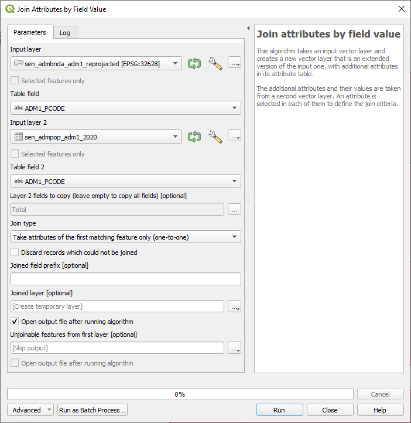
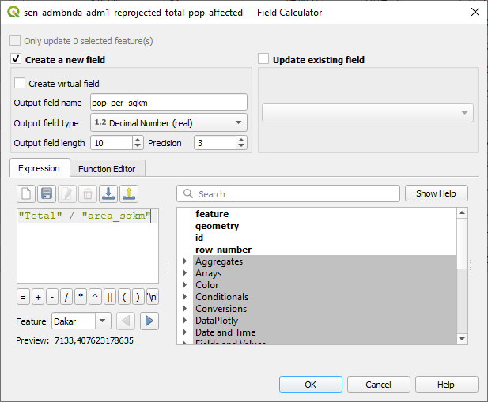
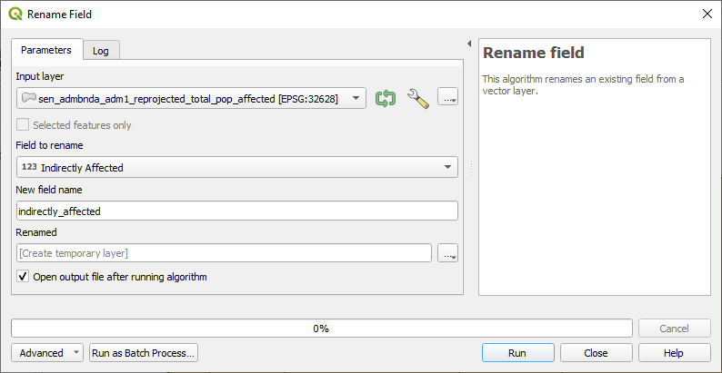
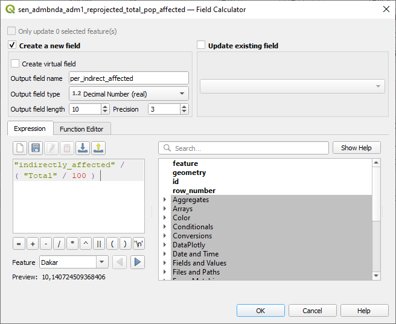

Ejercicio 2: Impacto de los desastres en diferentes regiones de Senegal#
Características del ejercicio#
Objetivo del ejercicio
Familiarizarse con los distintos tipos de análisis no espacial y las herramientas de geoprocesamiento. Comprender el proceso de descubrimiento de relaciones y conexiones entre entidades en datos espaciales.
Tipo de ejercicio de capacitación:
Este ejercicio puede utilizarse tanto en la capacitación en línea como en la presencial.
Puede realizarse como ejercicio guiado o individualmente a modo de autoestudio.
Grupo focal (Nivel de conocimientos SIG)
Estas habilidades son relevantes para
Duración estimada del ejercicio.
Artículos relevantes en Wiki
Instrucciones para capacitadores#
Rincón del instructor
Preparar la capacitación
Tómese su tiempo para familiarizarse con el ejercicio y el material proporcionado.
Prepare una pizarra. Puede ser una pizarra blanca física, un rotafolio o una pizarra digital (por ejemplo, una pizarra Miro) donde los participantes puedan añadir sus conclusiones y preguntas.
Antes de comenzar el ejercicio, asegúrese de que todos hayan instalado QGIS y hayan descargado y descomprimido la carpeta de datos.
Consulte ¿Cómo realizar capacitaciones? para obtener algunos consejos generales para impartirlas.
Impartir la capacitación
Introducción:
Presente la idea y el objetivo del ejercicio.
Proporcione el enlace de descarga y asegúrese de que todos los participantes hayan descomprimido la carpeta antes de comenzar las tareas.
Guía paso a paso:
Muestre cada paso y explíquelo al menos dos veces y de manera pausada para que todos puedan ver lo que está haciendo y aplicarlo en su propio proyecto de QGIS.
Pregunte con regularidad si alguien necesita ayuda o si todos están siguiendo el ejercicio, para asegurarse de que todos comprenden y realizan los pasos por sí mismos.
Mantenga una actitud abierta y paciente ante cualquier pregunta o problema que pueda surgir. Los participantes están haciendo varias tareas a la vez: prestan atención a sus instrucciones y las aplican en su propio proyecto de QGIS.
Cierre de la sesión:
Dedique tiempo al final del ejercicio a cualquier problema o pregunta relacionada con las tareas que pueda surgir.
Reserve algo de tiempo para preguntas abiertas.
Datos disponibles#
Descargue todos los conjuntos de datos aquí, guarde la carpeta en su ordenador y descomprima el archivo.
sen_admbnda_adm1_1m_gov_ocha_20190426.shp: Datos de los límites de Senegal (Nivel administrativo 1)DI_Stat924.xls: Datos de Desinventar Sendai de Senegal que muestran los efectos de los desastres en las regiones senegalesassen_admpop_adm1_2020.csv: Senegal nivel administrativo 1 (región) 2019 proyección cartográfica de estadísticas de población
Hint
Todos los archivos conservan sus nombres originales. No obstante, no dude en modificar sus nombres si fuera necesario para identificarlos más fácilmente.
Tarea#
Crear un resumen general de los efectos de los desastres en las distintas regiones de Senegal. Utilice uniones no espaciales, funciones de tabla y diferente simbología.
Hint
El sistema de coordenadas previsto para Senegal es EPSG:32628 WGS 84 / UTM zone 28N
Cargue la capa de límites administrativos de Senegal (
sen_admbnda_adm1_1m_gov_ocha_20190426.shp), así como la población por unidad subnacional (sen_admpop_adm1_2020.csv) y los datos de Desinventar Sendai de Senegal (DI_Stat924.xls) en QGIS.Asegúrese de reproyectar el conjunto de datos con los límites administrativos en la zona UTM 28N. Para obtener más información, consulte la entrada de Wiki sobre proyecciones cartográficas .
Realice uniones no espaciales basadas en las regiones que figuran en dos conjuntos de datos y el PCODE que figura en estos mismos conjuntos. Consulte la entrada de Wiki sobre uniones no espaciales para obtener más información.

Captura de pantalla de las diferentes tablas de atributos con las columnas correspondientes resaltadas#
En primer lugar, añada la población total de cada área administrativa a los shapefiles. Seleccione la columna correcta que deberá añadirse (sugerencia: busque la columna denominada
Total).A continuación, sume el número de personas afectadas directa e indirectamente. Seleccione también las columnas correctas que deberán añadirse (sugerencia: busque los nombres de las columnas
Directly affectedyIndirectly Affected).
{kind=link}

Captura de pantalla de la herramienta Unir atributos por valor de campo para la población total#

Captura de pantalla de la herramienta Unir atributos por valor de campo para las personas afectadas directa e indirectamente#
Utilice las funciones de tabla para calcular la superficie de cada región en kilómetros cuadrados y la densidad de población. Para obtener más información, consulte la entrada de Wiki sobre las funciones de la tabla.
Cree una nueva columna/campo con el nombre
"area_sqkm"utilizando la calculadora de campos. Asegúrese de que se utilicen números decimales como tipo de campo. Para el cálculo utilice la expresión:$area / (1000 * 1000)Cree otra columna/campo con el nombre
"pop_per_sqkm"con números decimales como tipo de campo. Utilice la expresión:"Total" / "area_sqkm"para el cálculo.
Puede acceder a la calculadora de campo a través de su tabla de atributos activando 
Toggle editing mode y haciendo clic en este símbolo  para
para Open field calculator.

Captura de pantalla del cálculo del área utilizando la calculadora de campo#
{kind=link}

Captura de pantalla del cálculo de la población por km2 mediante la calculadora de campo#
Ahora, debemos cambiar el nombre de las columnas
Indirectly AffectedyDirectly Affectedpara que no contengan espacios. Esto garantiza que la calculadora de campo funcione correctamente. Para esta tarea utilizaremos la herramientaRename field.
{kind=link}

Captura de pantalla de la herramienta Renombrar campo#
Determinemos ahora la proporción de la población afectada directa o indirectamente en relación con la población total por región.
Utilice la calculadora de campo. Utilice la expresión:
"Indirectly Affected" / ("Total"/100)Utilice la calculadora de campo. Utilice la expresión:
"Directly Affected" / ("Total"/100)
{kind=link}

Cálculo de la proporción de la población indirectamente afectada en relación con la población total de cada región.#

Cálculo de la proporción de la población directamente afectada en relación con la población total de cada región.#
Seleccione un esquema de colores utilizando
Symbologypara visualizar la proporción de personas directamente afectadas en las diferentes regiones (sugerencia:Categorized).Juegue con diferentes modos para encontrar un esquema de color/categorización útil para la visualización.
¿Qué regiones están más afectadas directamente y cuáles menos? ¿Existen diferencias en los datos?
Exporte el mapa en formato png (sugerencia:
Project, Import/Export, Export map to Image).Repita los pasos anteriores, pero esta vez visualice las personas indirectamente afectadas en cada región (sugerencia:
Categorized, columnaIndirectly affected).¿Qué diferencias se observan entre las regiones directamente afectadas y las indirectamente afectadas?